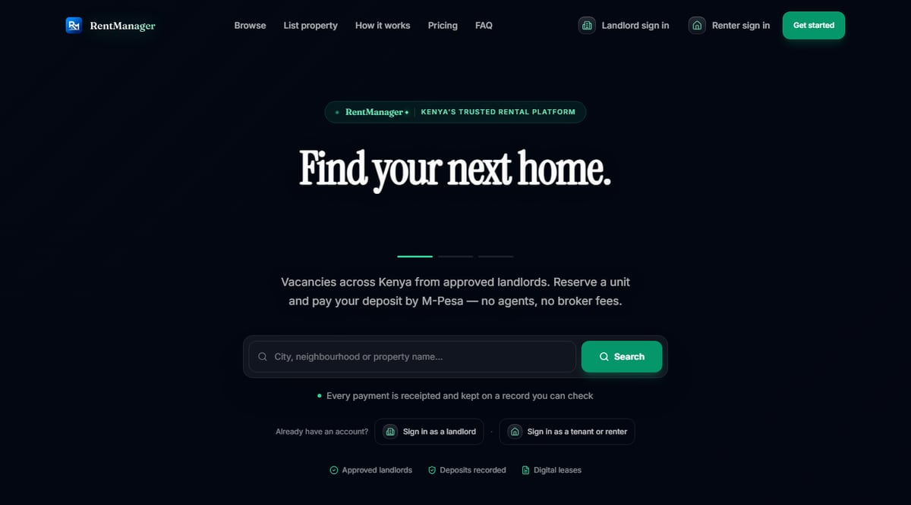

One deep case study, honestly, rather than a dozen thin ones.
RentManager is the real body of work right now — a rental-management SaaS I've been building end to end since mid-2026. I'd rather show you that in depth than pad this page with smaller exercises that don't represent what I can actually build.
RentManager
A rental-management platform for Kenyan landlords and tenants: properties, units, leases, an M-Pesa-driven rent ledger, commission and payouts, and Kenya's monthly rental-income tax filing — built as a Java/Spring Boot backend with a Next.js frontend.

Smaller work
Earlier exercises — small JavaFX applications, data-structure practice — live on my GitHub. I'm not featuring them here because they don't reflect what I build now; I'd rather you judge the real work.